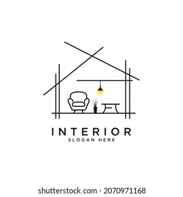

Menú
¿Qué es diseño de interiores?
El diseño interior o interiorismo es la disciplina proyectual involucrada en el proceso de formar la experiencia del espacio interior, con la manipulación del volumen espacial así como el tratamiento superficial.
El diseño interior es una práctica creativa que analiza la información programática, establece una dirección conceptual, refina la dirección del diseño, y elabora documentos gráficos de comunicación y de construcción.
Los diseñadores de interiores trabajan para crear espacios atractivos, funcionales y seguros, satisfaciendo las necesidades especificas de cada cliente.
¿Quiénes somos?
Somos una página web, donde podrás encontrar ideas de diseños de interiores para elementos de tu casa como:
-Cocina
-Habitaciones
-Baño
-Sala de estar